פה־אתיקה
תזה בארכיטקטורה שלוקחת ממים ברצינות.
אוניברסיטת תל אביב, 2026.
a B.Arch thesis that takes memes seriously
SITE
מסתכלים מסביב. אומרים משהו.
„מגחכים על העיר” — פלטפורמה השתתפותית לממים על המרחב הבנוי. רואים משהו ברחוב, עושים עליו מם, והוא נכנס לשדה — יחד עם התגובות, השיתופים והרמיקסים של כולם.
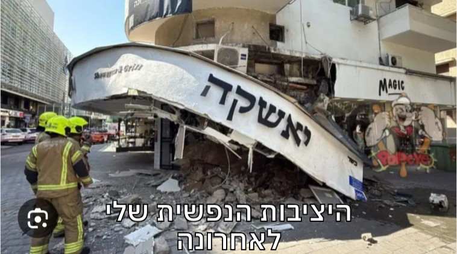
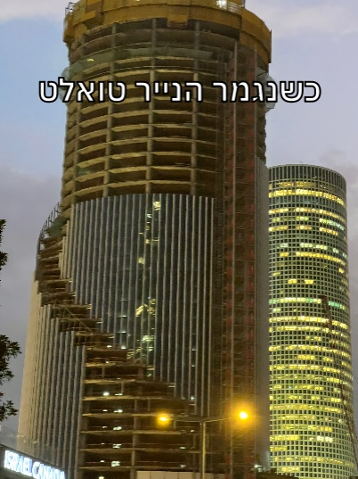
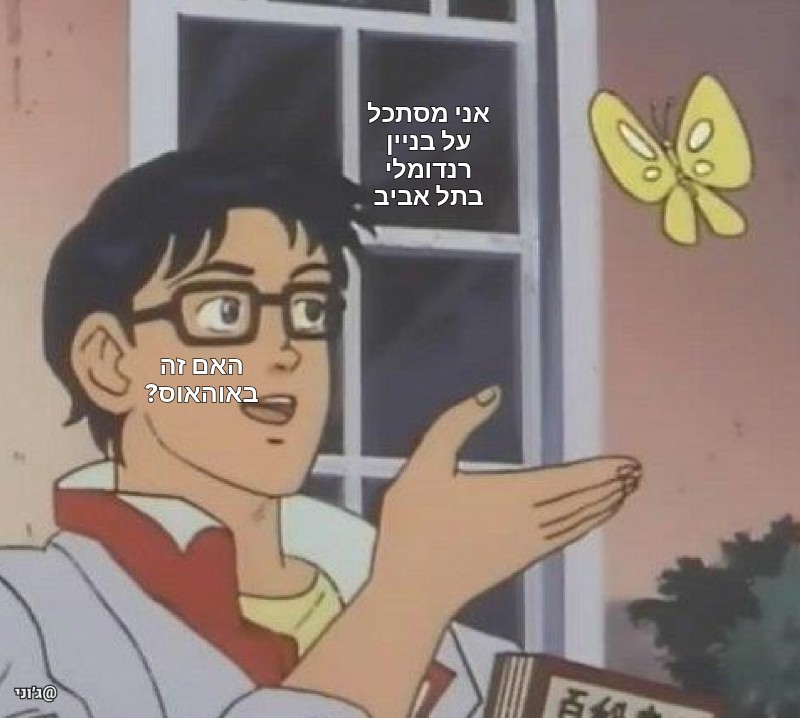
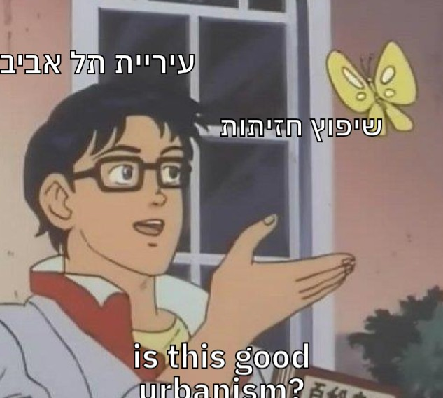
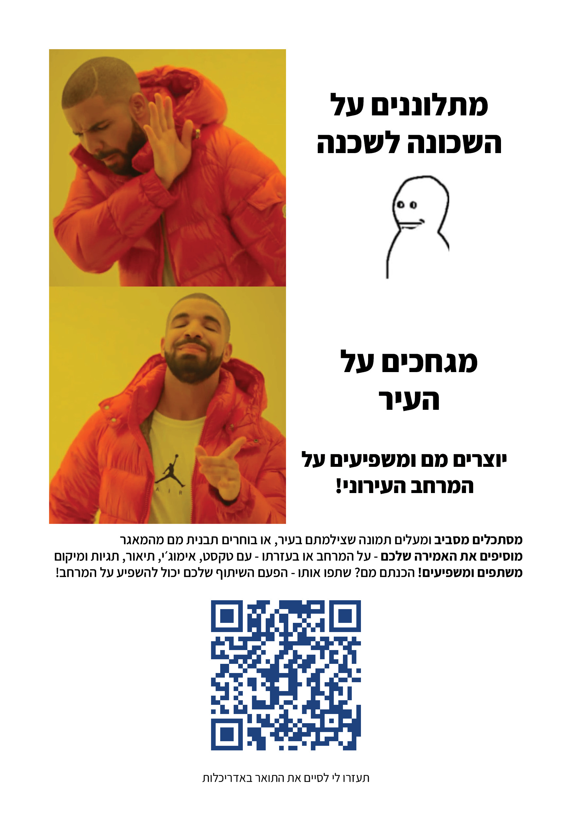
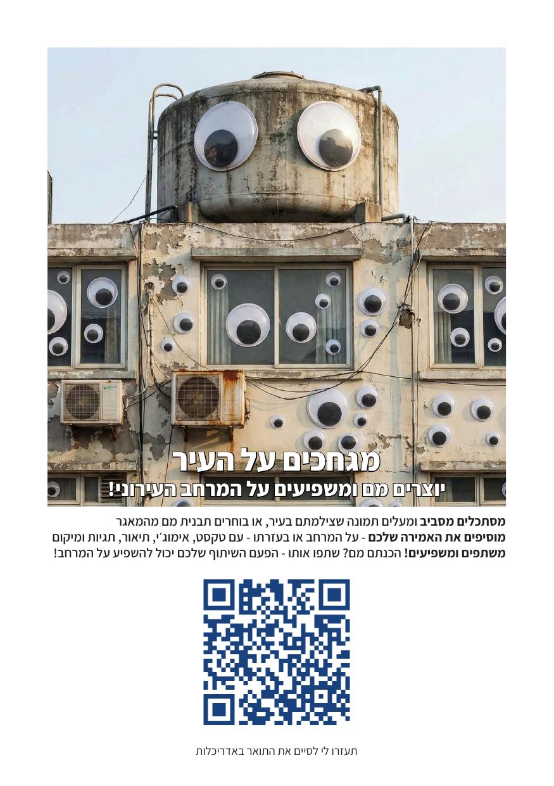
“Giggling at the City” is a participatory platform for creating and sharing memes about the built environment. Turn an observation into a meme and add your reading to the memescape.
שמונה חתכים אפשריים. בוחרים ארבעה.
כל קלף הוא צירוף אחר של ארבעה חתכים בקובייה אחת של 42 מ״מ. C(8,4)=70 — שבעים זה לא בחירה, זה חשבון.
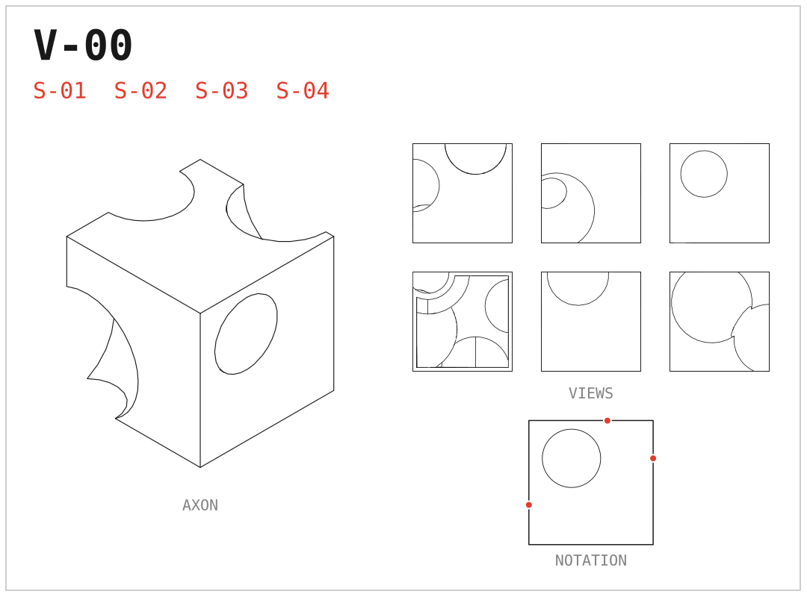
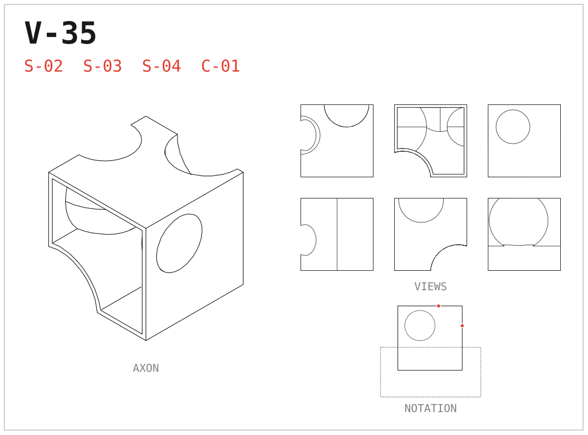
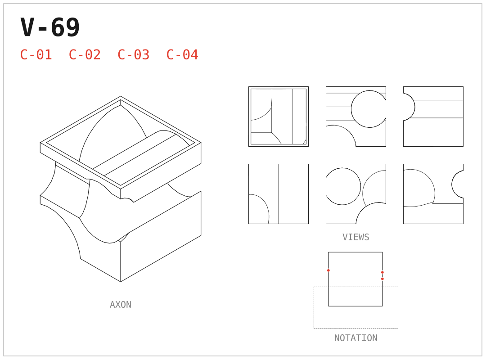
70 variation cards · one 42mm cuboid · four boolean cuts each
לכל הקלפים ←שבעים פנים לקובייה
שבעים וריאציות, לכל אחת נימוק משלה. כן, לכולן.
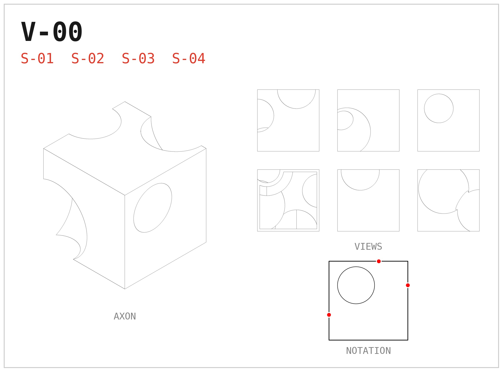
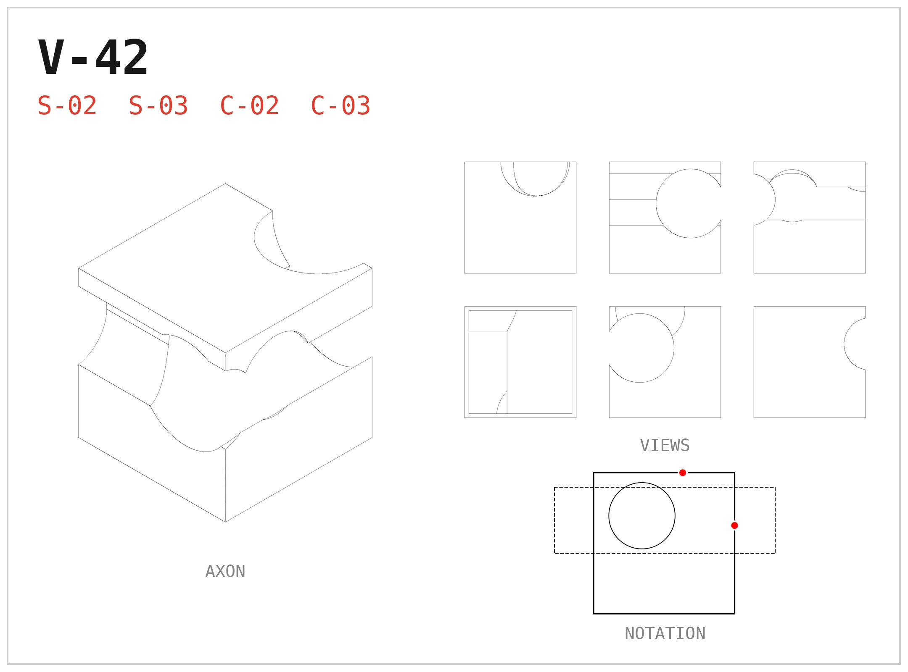
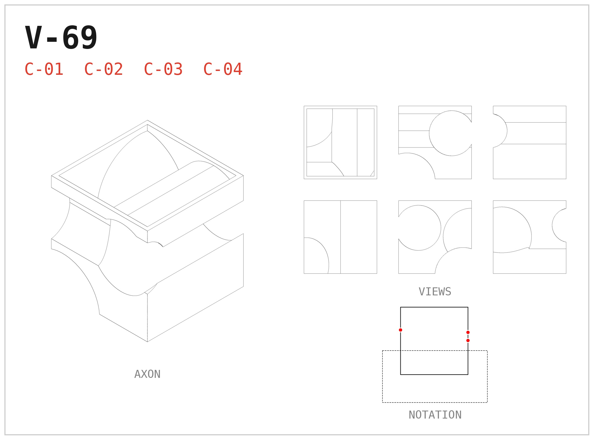
The Seventy: seventy argued variations on a cube.
יש גם תזה כתובה. ברצינות.
מהפטאפיזיקה של ז׳ארי ועד הממים של שיפמן — הטקסט המלא, עם כל הציטוטים.
Yes, there's a written thesis. With citations.
לקריאה ←סטודיו שלוקח קובייה ברצינות מוגזמת
CUBOID STUDIO — אפליקציה חיה שמייצרת וריאציות אדריכליות על קובייה אחת. אפשר (וכדאי) לשחק.
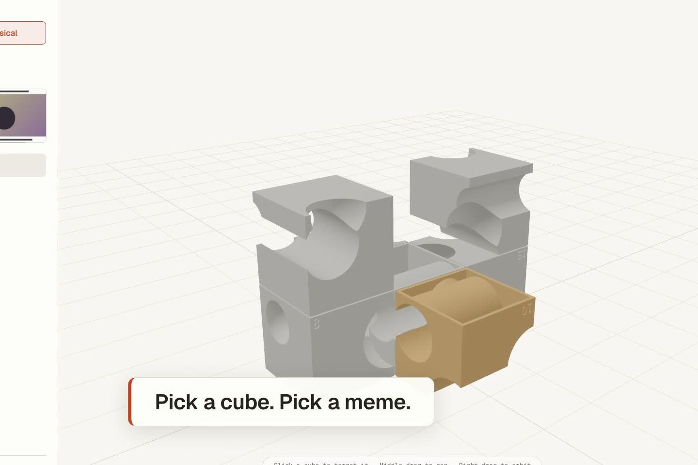
A live generative studio. One cube, endless takes.
לאפליקציה ←